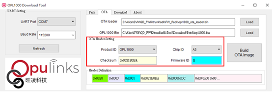

OTA examples
OTA (Over-The-Air) examples are intended to demonstrate the firmware upgrade over the air base on different application layer protocol, and the examples all using AT command to triggering OTA process.
To understand the OTA mechanism, please check on OTA section in appplication-guide.
HTTP OTA
HTTP OTA example provides the OTA demonstration on HTTP protocol, the user can issue the AT command at+ota with URL to trigger the upgrade, and the application will begin to download the firmware from a given URL of HTTP file server, and will reboot the system after it's done.
HTTP OTA example located at /example/ota/http_ota
Before start this try out, we're recommend to wire the Debug port and UART1 port to your PC at same time, the connection of wire shows at Device Setting. In cause of two connection, the developer must issue the AT command in this example, and also need to check the printed log of OTA status at same time, so wired two UART port can easy to check at immediate.
About the mechanism of HTTP OTA, when the user issue AT command to trigger firmware upgrade, the OTA task handler will receive OTA request from application. After receiving request the OTA task handler will connect to http file server and download binary file. It will also trigger OTA manager to write data to flash. After OTA manager finish write data to flash, it will restart the system to finish the upgrade of your firmware.
Setup
HTTP File Server
The HFS is a free application from rejetto.com that can easily to generate the HTTP file server on your PC. In this example we will use this tool to set the upgradable firmware and it will create a given link for AT command we will issue.
- HTTP File Server: https://www.rejetto.com/hfs/?f=dl
The binary file should be added to HTTP file server, and then the user can start OTA, and download the binary file on HTTP file server.
Device Setting
This diagram shows how to wire two UART serial port at the same time.
| GPIO | Function | Default Mode |
|---|---|---|
| IO8 | UART1 TX | AT |
| IO9 | UART1 RX | AT |
| IO1 | DEBUG RX | DEBUG |
| IO0 | DEBUG TX | DEBUG |
Testing
Step1. Build project
Click Build and Rebuild button to compiler project.
Output file <Project name>.bin located at <Project root>/Output/Object .
You can follow Step5 section in Get started to build the project.
Step2. Download firmware
You can follow Step6 section in Get started to download firmware.
Pay attention to OTA tag. Because we need to execute "HTTP OTA" process, it is important to set OTA Header Setting:
- Product ID -> select to the target chip series ID.
- Chip ID -> select to the target chip ID.
- Firmware ID -> number of current project version.
- Checksum -> It will auto-calculated.
Note
The developer can generate two binary files with different Firmware ID or add some log in program to easily check whether the upgrade is successful or not.

Step3. Wi-Fi provision via BLE
HTTP OTA example download binary file from HTTP file server so the user must need to set the same AP with HTTP file server.
You can follow Wi-Fi provision via BLE section in Start Up examples to set the same AP.
Step4. Add binary file to HTTP File Server
Add binary file to HTTP File Server.
The binary file is located at sdk/Tool/Download/Patch/<project name>.bin .
After adding binary file to server, an url will be generated, the user can copy this url (ex:http://190.168.1.52/op1000_ota.bin) and follow next step.
Step5. Issue AT command to start OTA.
Open two terminals (such as Tera-Term application), one is DBG mode and another is AT mode. DBG mode is to check the message and AT mode is to issue AT command.
The user can issue AT command at+OTA=http://<IP address>/<firmware name>.bin to start OTA.
If the user success to start OTA, you will get "OTA start" on the terminal of DBG console like the below figure.
After finishing OTA process, The "download success" and "OTA finish" messages will show in DBG console of the terminal window.
BLE OTA
Please refer to Wi-Fi provision via BLE